《追色手记12》学习资料
荒真人 / Ara Makoto：干净清新环境人像与 Lightroom 仿色实操
视频标题 | 【追色手记12】好干净的日系风！荒真人 / Ara Makoto 调色教程来啦（附预设） |
作者 | 摄影师聿铭 |
时长 | 约 8 分 39 秒 |
来源 | https://www.bilibili.com/video/BV1rm4y1p7WV/ |
整理日期 | 2026-05-22 |
说明：本文根据视频音频转写、画面截取与内容校对整理，保留学习所需的方法、步骤和关键截图，不包含逐字稿。
荒真人作品参考截图
以下为视频中展示的荒真人作品和分析画面截图，用来观察环境人像、明亮直方图、肤色、墨绿色环境和冷色氛围。它们是视频截图，可能保留字幕、界面或讲解标注。
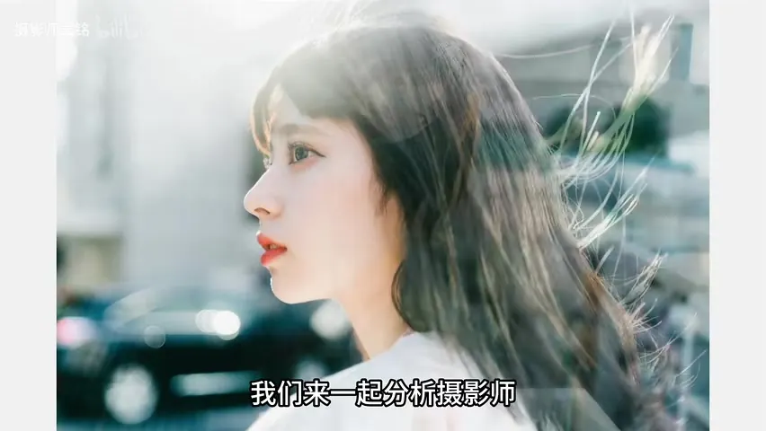 侧脸人像：清新冷调 | 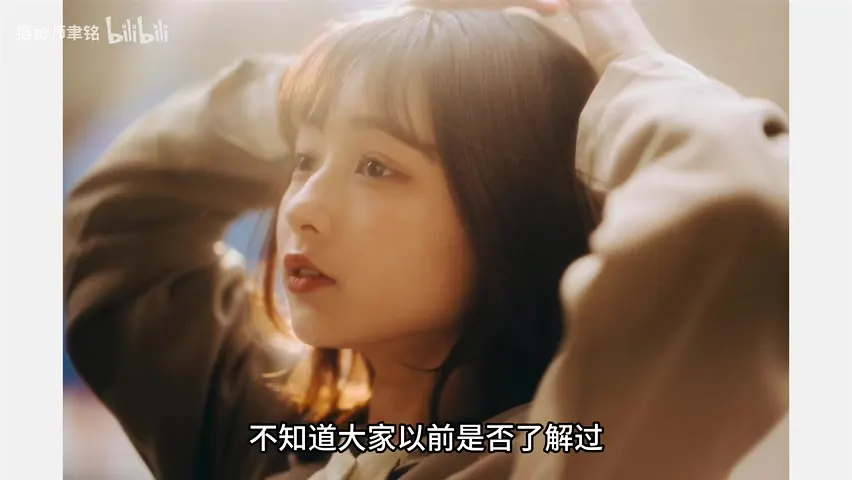 窗边人像：柔和高调 |
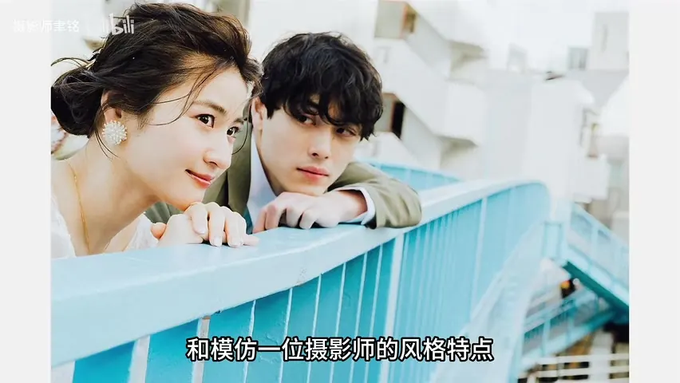 婚纱环境人像 | 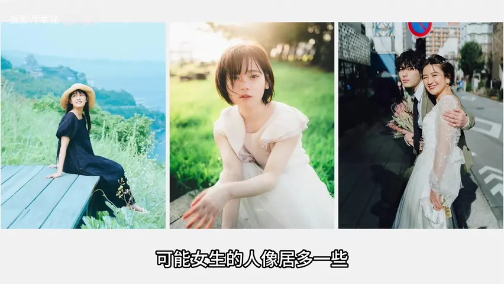 题材范围：人像为主 |
|
环境人像：半身/全身 |
竖构图与环境信息 |
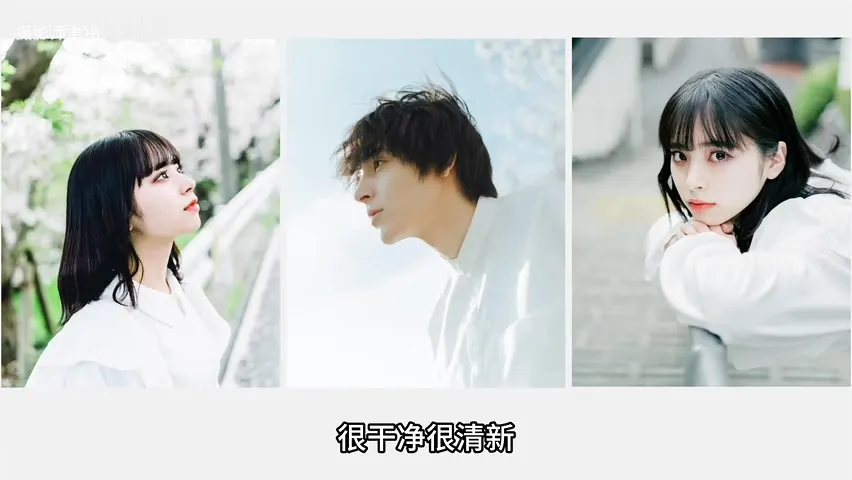 干净白色画面 | 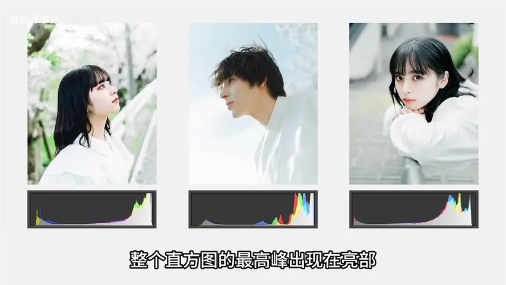 直方图与画面对照 |
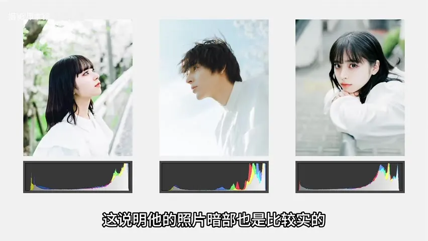 亮部峰值：整体偏亮 | 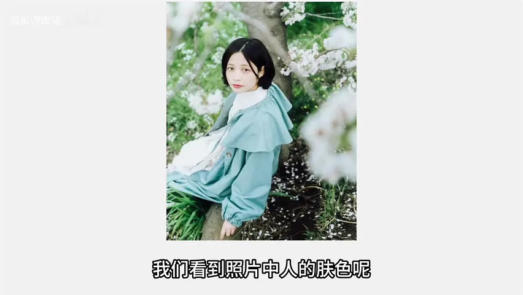 肤色：白里微黄 |
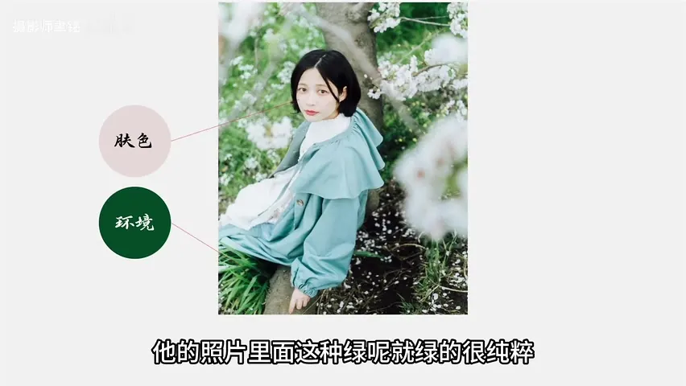 环境绿：纯净墨绿 | 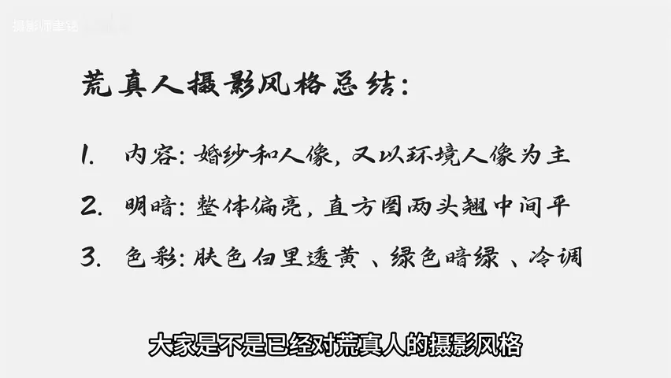 风格总结：内容/明暗/色彩 |
一页速览
风格核心 | 荒真人的作品给人“干净、清新、明亮但不空”的感觉，关键是偏亮影调、扎实暗部、干净肤色、墨绿色环境和冷色氛围。 |
内容特点 | 以人像和婚纱为主，环境人像较多，半身和全身常见，也有少量大头照；女性人像更多，但不是唯一题材。 |
明暗结构 | 直方图最高峰常在亮部，说明整体偏亮；右侧纯白缺失，避免刺眼；暗部也有小波峰，形成两头翘、中间低的层次。 |
色彩结构 | 肤色白里微黄但不惨白；绿色偏纯、偏墨绿，少黄绿感；亮部和暗部都有冷色倾向，所以画面清新。 |
实操顺序 | 4:5 裁剪 -> 色温冷、色调偏绿 -> 高光白色下压、阴影上提、黑色压实 -> 去朦胧降低、曝光微降 -> 曲线重塑 -> 校准右右左 -> HSL 修红橙黄绿 -> 颜色分级加蓝 -> 颗粒。 |
学习目标
能用内容、明暗结构、色彩搭配三问拆解荒真人风格。
理解干净清新不是单纯提亮，而是亮部柔、暗部实、黑白端有控制。
能把肤色、环境绿、氛围色分开处理，不让画面变黄绿或惨白。
掌握 4:5 裁剪、冷绿白平衡、曲线压亮部与实暗部、校准右右左的工作流。
能用 HSL 和颜色分级完成红橙黄绿与冷色氛围的精修。
核心方法：三问拆解
问题 | 观察重点 | 本片结论 |
拍什么 | 题材、人物比例、场景类型。 | 人像与婚纱为主，环境人像更多，半身和全身常见，画面留有环境信息。 |
明暗怎么处理 | 直方图峰值、黑白端、暗部是否扎实。 | 整体偏亮，右侧纯白缺失；暗部有小波峰，两头翘中间低，层次分明。 |
颜色怎么搭配 | 肤色、环境色、亮暗部氛围色。 | 肤色白里微黄，绿色偏墨绿，亮部暗部都有冷色，形成干净清新感。 |
Lightroom 实操流程
裁剪与参考：荒真人在 Instagram 上常见 4:5 竖构图，因此先裁成竖图；打开参考视图，把参考图放在左边方便对照。
白平衡冷绿微调：把色温略往冷色移动，让画面更清新干净；色调往绿色微调一点，配合后面的墨绿色环境。
基础面板控亮暗：高光和白色色阶下压，避免纯白；阴影略提，保留信息；黑色色阶压暗，因为荒真人照片暗部比较实。
柔化与曝光：降低去朦胧能让画面更柔和，同时会变亮；因此曝光可适当压低，让整体不过曝。
曲线重塑影调：中间位置上提让画面更亮；暗部压回，让黑位更实；最左端小尾巴上提一点，让黑色变为黑灰；最右端下压，让亮部缺失、过渡自然。
校准拉开冷暖：红、绿、蓝三个原色色相多数情况下按右右左调整，拉开冷暖对比，提升色彩观感；饱和度只做微调。
HSL 修红橙黄绿：红色主要是嘴唇，往橙色微调并提亮；橙色影响肤色，往黄色、略加饱和、提亮；黄色往绿色并降饱和；绿色往墨绿并降饱和与明亮度。
颜色分级加冷色：阴影色相约 210 加蓝色，高光也加入一点蓝色，让画面亮暗部都带冷色空气感。
颗粒收尾：最后加少量颗粒，增加质感；本片没有大量局部蒙版，重点在整体结构和颜色关系。
工具速查表
工具 | 用途 | 本片操作 | 注意点 |
裁剪 | 贴近社媒构图 | 裁成 4:5 竖构图。 | 先让构图接近，再谈仿色。 |
白平衡 | 建立清新冷调 | 色温略冷，色调略绿。 | 幅度要小，避免肤色发青或环境脏绿。 |
基础面板 | 控制明暗层次 | 高光/白色下压，阴影上提，黑色压暗。 | 荒真人不是灰暗风，暗部要实但整体仍明亮。 |
去朦胧 | 柔化画面 | 适当降低去朦胧。 | 会让画面变亮，需配合曝光微降。 |
曲线 | 重塑高调但有质感的直方图 | 中间调上提，暗部压回，黑尾上提，白端下压。 | 右侧纯白缺失是关键，亮部不能硬炸。 |
校准 | 拉开冷暖与整体观感 | 红绿蓝右右左。 | 校准是全局工具，轻推即可。 |
HSL | 精修肤色和绿色 | 红往橙、橙往黄提亮、黄往绿降饱和、绿往墨绿。 | 绿色幅度过大容易假，必须参考左侧图。 |
颜色分级 | 增加冷色氛围 | 阴影和高光都加少量蓝。 | 冷色是清新来源，不是全图蓝染。 |
颗粒 | 增加质感 | 少量颗粒。 | 干净风格下颗粒应轻，不要破坏通透。 |
关键截图与讲解
图 01 | 00:14 | 荒真人风格引入。
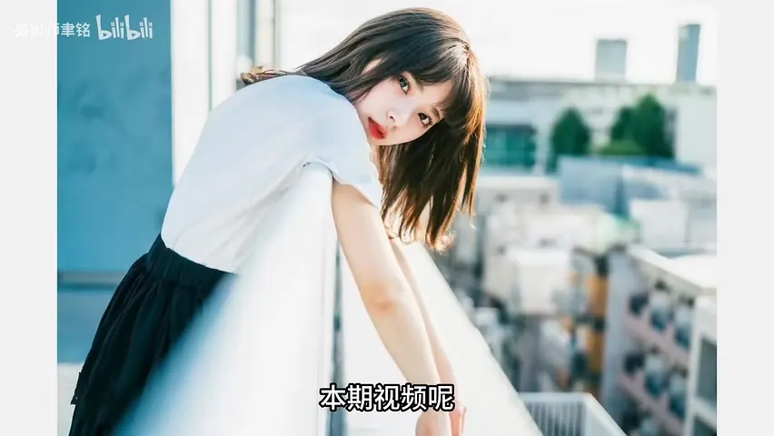
学习要点：本期目标是分析荒真人的风格特点并学会调色思路。
图 02 | 00:31 | 三问框架。
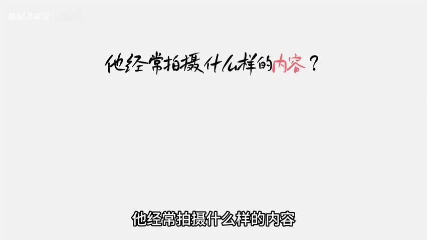
学习要点：拍什么、明暗结构、色彩搭配，是模仿摄影师风格的基础问题。
图 03 | 00:55 | 摄影师简介：人像与婚纱。
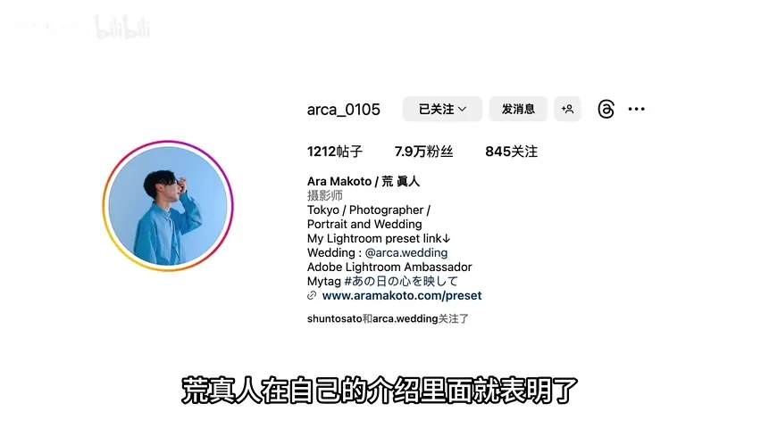
学习要点：作品基本围绕人像展开，女性人像更多，也有男性人像。
图 04 | 01:13 | 环境人像为主。
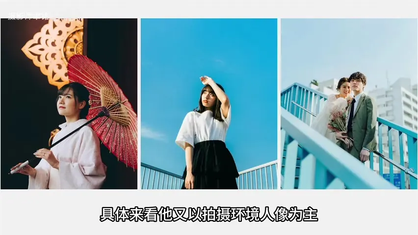
学习要点：半身和全身人像较多，画面会保留环境信息。
图 05 | 01:30 | 画面干净清新。
学习要点：这是荒真人照片最直观的观感。
图 06 | 01:41 | 直方图亮部峰值。
学习要点：大部分像素集中在偏亮位置，说明整体是偏亮风格。
图 07 | 01:52 | 右侧纯白缺失。
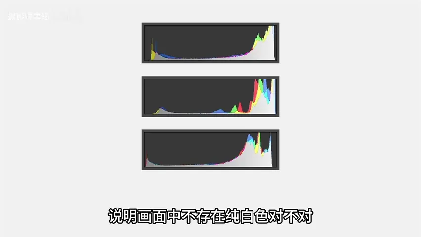
学习要点：画面中没有刺眼纯白，亮部柔和。
图 08 | 02:03 | 两头翘、中间低。
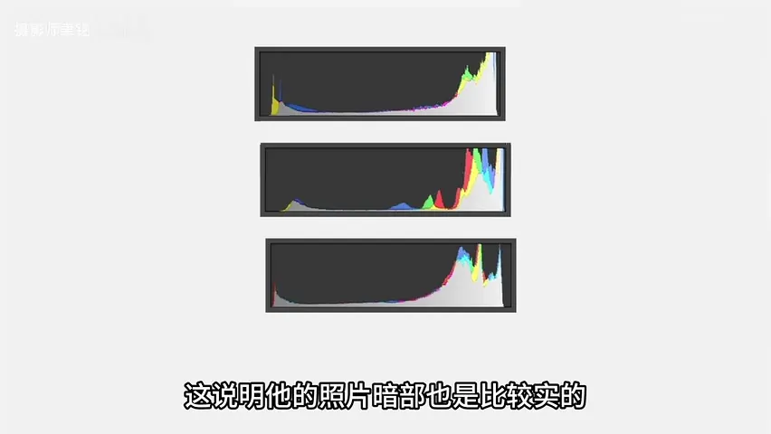
学习要点：暗部也有小波峰，所以画面既亮又有扎实层次。
图 09 | 02:21 | 色彩三关键。
学习要点：环境人像要把握肤色、环境色和氛围色。
图 10 | 02:28 | 肤色白里微黄。
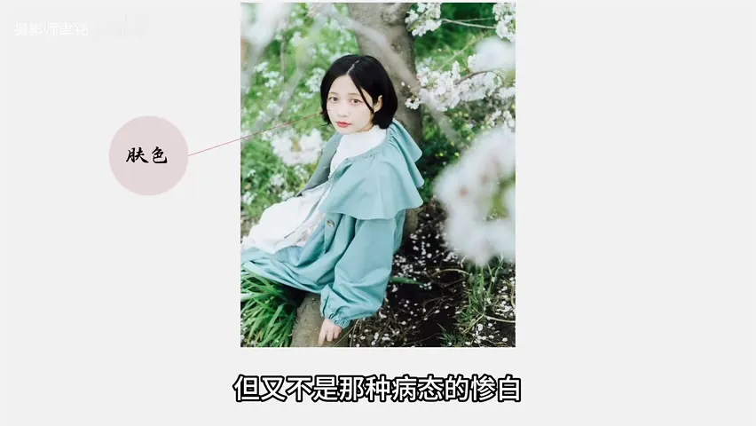
学习要点：很白但不是病态惨白，保留一点黄是关键。
图 11 | 02:44 | 环境绿偏墨绿。
学习要点：绿色干净、纯粹，不掺太多阳光黄绿。
图 12 | 03:00 | 亮暗部都偏冷。
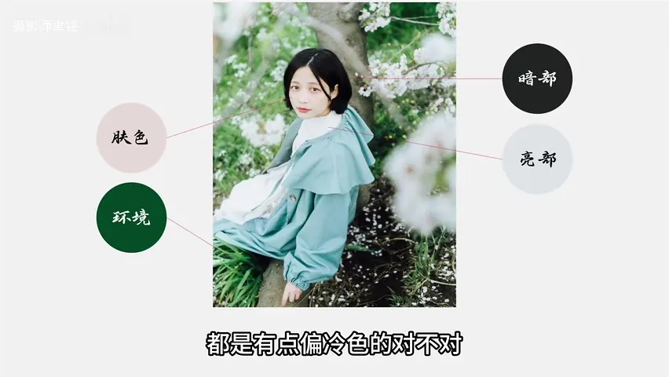
学习要点：冷色氛围让画面显得清新。
图 13 | 03:18 | 风格总结。
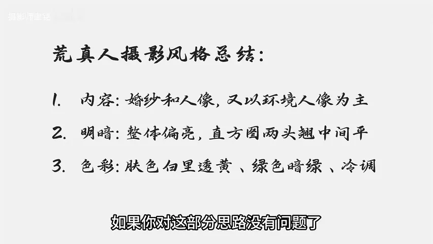
学习要点：内容、明暗、色彩三点合起来构成荒真人风格。
图 14 | 03:36 | 进入 Lightroom 演示。
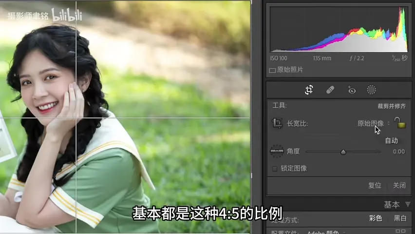
学习要点：选一张练习素材，并打开荒真人参考图进行对照。
图 15 | 03:42 | 裁成 4:5 竖构图。
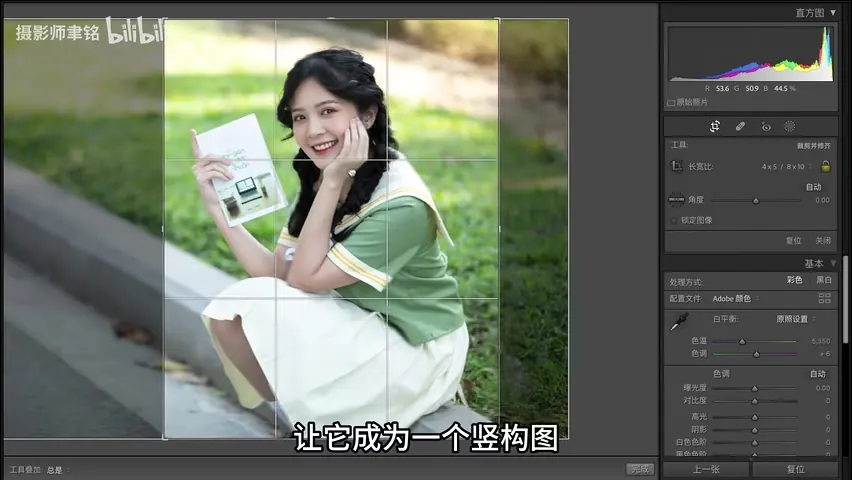
学习要点：贴近荒真人常见社媒画幅。
图 16 | 03:55 | 色温冷、色调绿。
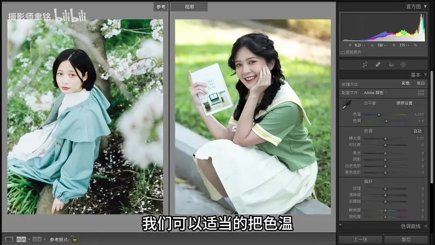
学习要点：冷色让画面更清新，微绿为后续环境色打基础。
图 17 | 04:15 | 高光白色下压、阴影上提。
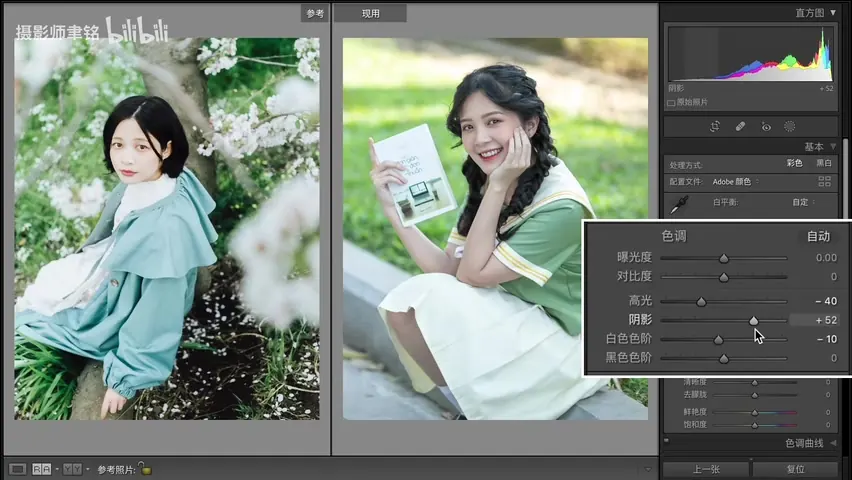
学习要点：亮部不刺眼，暗部保留信息。
图 18 | 04:24 | 黑色色阶压暗。
学习要点：让头发、地面等暗部更扎实。
图 19 | 04:42 | 降低去朦胧并微降曝光。
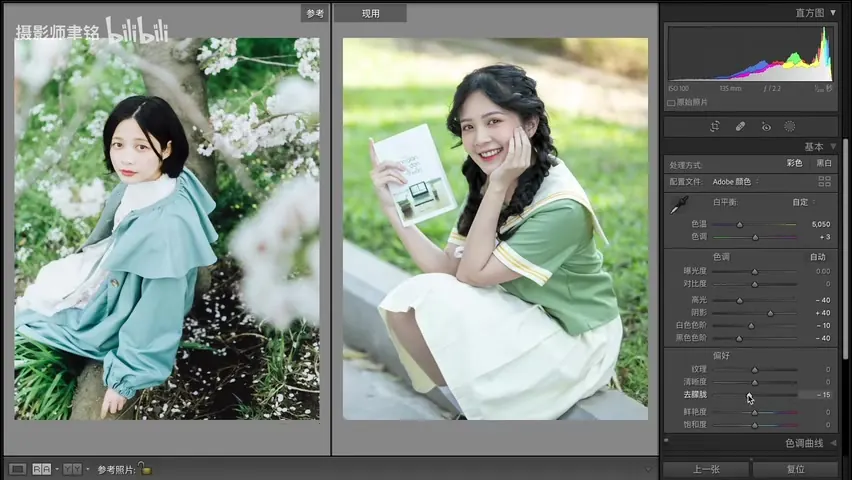
学习要点：柔化画面后用曝光控制整体亮度。
图 20 | 04:55 | 曲线中间调上提。
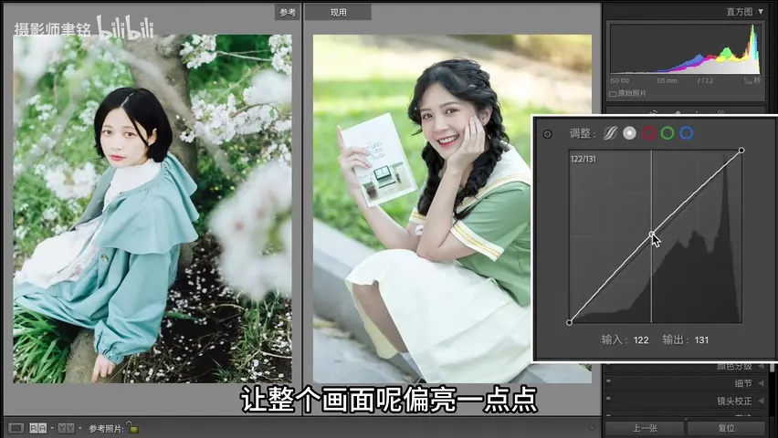
学习要点：让整体画面更亮一点。
图 21 | 05:06 | 暗部压回、黑尾上提。
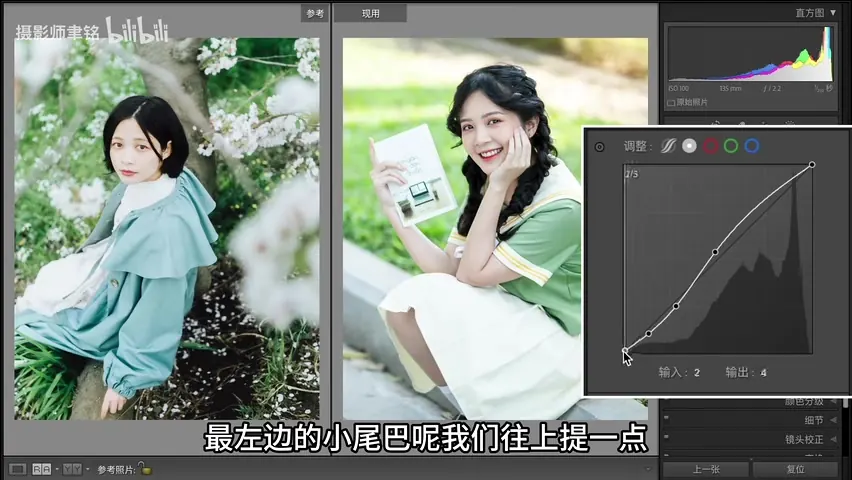
学习要点：暗部更实，同时黑色轻微变黑灰，增加质感。
图 22 | 05:22 | 最右端亮部下压。
学习要点：符合参考图亮部缺失的直方图状态。
图 23 | 05:42 | 校准右右左。
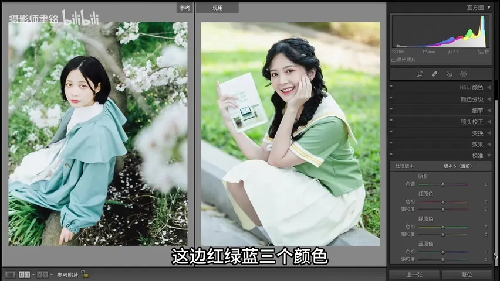
学习要点：拉开冷暖色调对比，提高色彩观感。
图 24 | 06:13 | HSL 红色修嘴唇。
学习要点：红色往橙色微调并提亮，贴近参考图口红颜色。
图 25 | 06:36 | HSL 橙色修肤色。
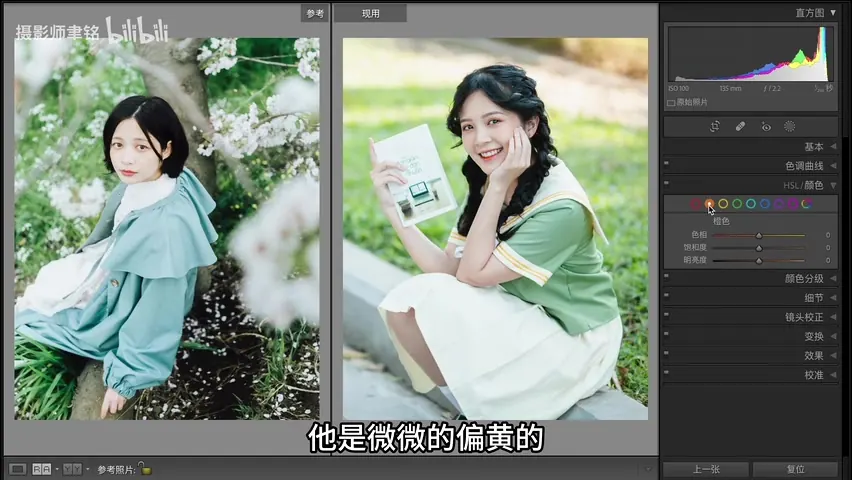
学习要点：肤色往黄色、略加饱和、提亮，避免惨白。
图 26 | 06:59 | HSL 黄色往绿色。
学习要点：减少草地阳光黄，降低黄色饱和。
图 27 | 07:10 | HSL 绿色往墨绿。
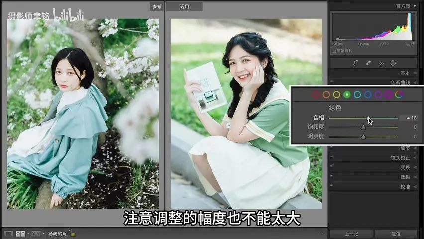
学习要点：降低绿色饱和和明亮度，让环境色更接近参考图。
图 28 | 07:35 | 颜色分级：阴影加蓝。
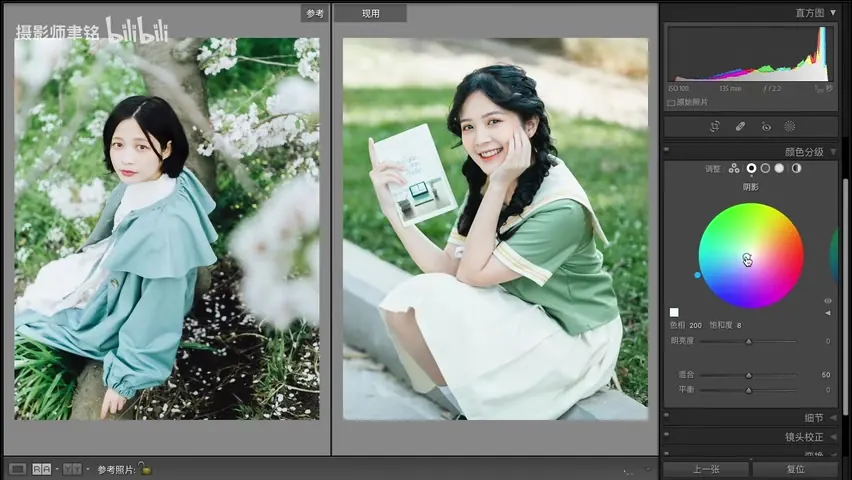
学习要点：色相约 210，给暗部冷色氛围。
图 29 | 07:46 | 颜色分级：高光加蓝。
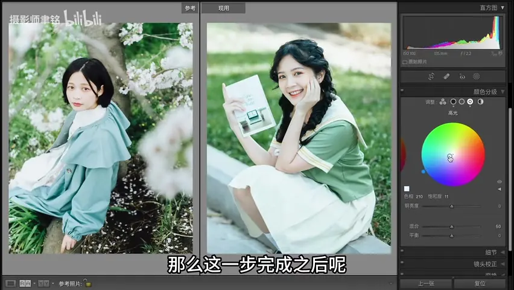
学习要点：亮部也加入一点冷色，画面更清新统一。
图 30 | 07:57 | 效果：颗粒。
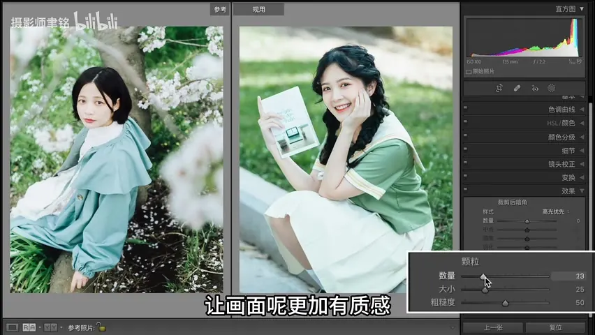
学习要点：少量颗粒增加质感。
图 31 | 08:06 | 最终前后对比。
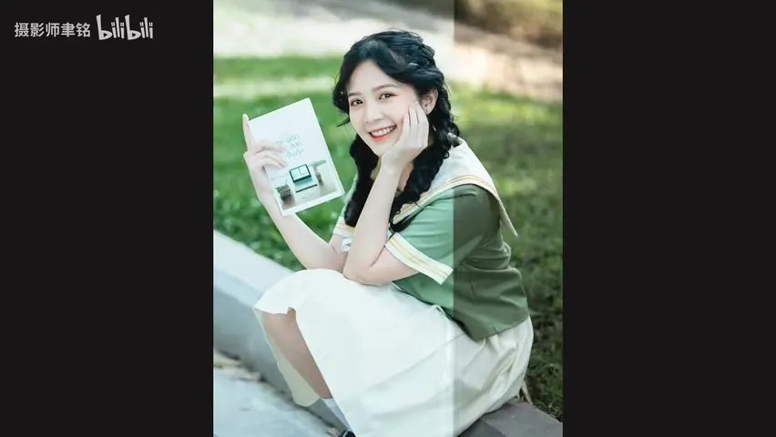
学习要点：仿色关键是抓住精髓，做到神似而形不同。
练习任务
选择一张明亮环境人像，最好有人物和绿色环境，不要选纯暗调夜景。
先写下三问答案：拍什么、明暗结构、肤色/环境色/氛围色分别是什么。
裁成 4:5 竖图，并打开一张荒真人参考图做对照。
用基础面板做到整体偏亮、亮部柔、暗部扎实，再用曲线微调直方图两端。
用 HSL 分别处理红色嘴唇、橙色肤色、黄色草地和绿色植物。
最后用颜色分级给阴影和高光加一点蓝，并用少量颗粒收尾。
复盘清单
检查项 | 通过标准 |
内容 | 以环境人像为主，人物和环境都有信息。 |
构图 | 4:5 竖构图自然，人物比例与参考图接近。 |
亮度 | 整体偏亮，但没有纯白刺眼区域。 |
暗部 | 头发、地面等暗部扎实，有层次，不是一片灰。 |
肤色 | 白里微黄、通透，不惨白、不发青。 |
绿色 | 偏墨绿、纯净，少黄绿脏感。 |
氛围色 | 亮部和暗部都有轻微冷色，画面清新。 |
整体 | 干净清新但有质感，不是简单提亮和降饱和。 |
时间轴速查
时间 | 模块 | 重点 |
00:10-00:50 | 课程引入 | 提出内容、明暗、色彩三问框架。 |
00:50-01:20 | 内容分析 | 人像与婚纱为主，环境人像较多。 |
01:20-02:10 | 明暗分析 | 整体偏亮，右侧纯白缺失，暗部也扎实，两头翘中间低。 |
02:10-03:20 | 色彩分析 | 肤色白里微黄，绿色偏墨绿，亮暗部都有冷色。 |
03:20-04:05 | 裁剪与白平衡 | 4:5 裁剪，色温偏冷，色调偏绿。 |
04:05-04:50 | 基础面板 | 高光白色下压，阴影上提，黑色压暗，去朦胧降低，曝光微降。 |
04:50-05:35 | 曲线 | 中间调上提、暗部压回、黑尾上提、亮端下压。 |
05:35-06:05 | 校准 | 红绿蓝右右左，拉开冷暖对比。 |
06:05-07:25 | HSL | 红、橙、黄、绿分别处理嘴唇、肤色、草地和环境绿。 |
07:25-08:10 | 颜色分级与收尾 | 阴影/高光加蓝，加入颗粒，查看前后对比。 |
全部图片
本页共保留 40 张来自 Word 的图片。上方正文中已按文档顺序展示，这里作为总览索引。